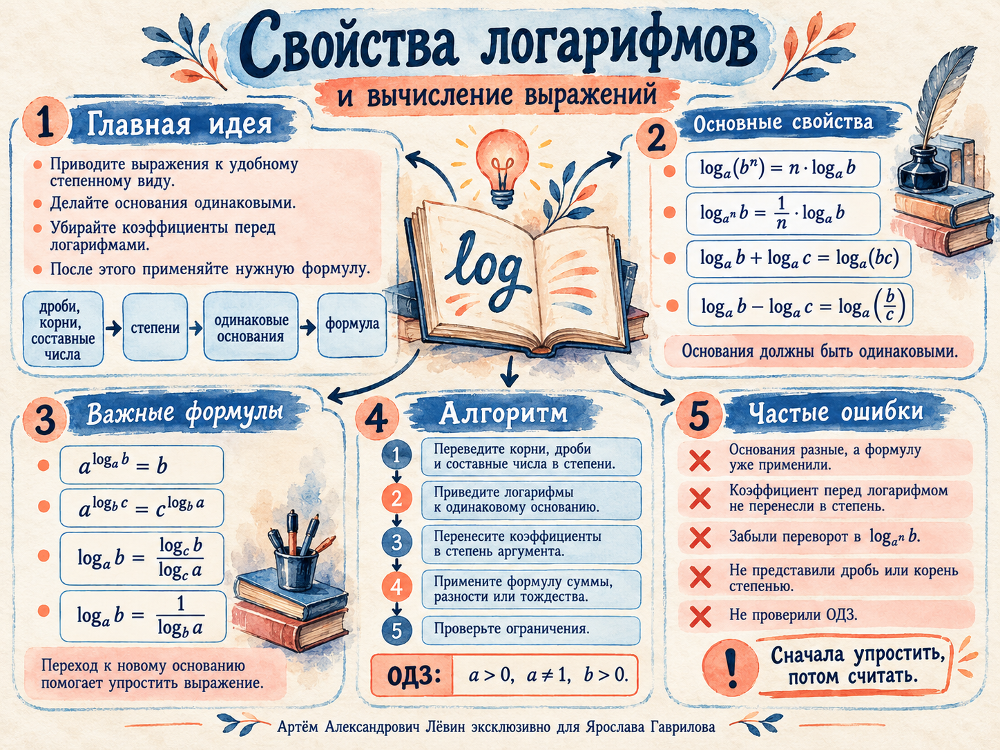

Как читать логарифм
Логарифм отвечает на вопрос о показателе степени.
Число loga b показывает, в какую степень нужно возвести основание a, чтобы получить положительное число b.
Опорный пример
Независимо от допустимого основания: loga 1 = 0; loga a = 1.
Где стоит степень?
Положение показателя определяет, какой множитель получится.
Пример 1 / корень как степень
Пример 2 / две формулы вместе
Сумма и разность
Для одной формулы нужны одинаковые основания и правильно перенесённые множители.
Пример 3 / множитель у логарифма
Пример 4 / разные основания
Пример 5 / отрицательная степень основания
Степень уничтожает логарифм
Основания степени и логарифма должны точно совпадать.
Пример 6 / коэффициент в показателе
Пример 7 / сумма в показателе
Пример 8 / степень основания
Пример 9 / основание 16
Сначала 16 = 24, затем log16 5 = ¼ log2 5, а разность в показателе превращается в деление.
Выбрать удобное основание
Правило полезно для произведений и дробей из логарифмов.
Пример 10 / произведение логарифмов
Единицу сначала запишите в подходящем виде: 1 = log2 2 для первой скобки и 1 = log6 6 для второй.
Как начинать преобразование
Небольшая пошаговая разборка опирается на пример 9 из пособия.
- Проверить ОДЗ. Основания положительны, отличны от единицы; аргументы положительны.
- Перевести в степени. Например, 27 = 33, 1/9 = 3−2, 0,25 = 2−2.
- Согласовать основания. В том числе с использованием перехода к новому основанию.
- Внести коэффициенты в аргументы. Если это требуется для объединения.
- Применить свойство. В конце проверить знаки, показатели и результат.

Что чаще всего мешает
- Путают два выноса. У аргумента выходит множитель r, у основания — 1/r.
- Складывают аргументы. Для суммы логарифмов одного основания требуется произведение bc.
- Складывают логарифмы с разными основаниями. Сначала приведите основания.
- Оставляют коэффициент перед логарифмом. Для свёртки перенесите его в показатель аргумента.
- Теряют минус. 1/9 = 3−2, а 0,25 = 2−2.
- Неверно делят дробные показатели. Деление на 3/5 требует умножения на 5/3.
- Пишут тесно. Разделите перенос показателей, применение формулы и арифметику.
10 заданий
Самостоятельная тренировка по нарастанию сложности; условия совпадают с пособием.
- Вычислитеlog2 64
- Вычислитеlog31⁴√81
- Вычислитеlog³√5 25
- Вычислитеlog⁵√125(³√25)2
- Сверните в один логарифмlog2 3 + 2 log2 5
- Сверните в один логарифмlog7 15 − log7 3
- Сверните в один логарифмlog1/3 4 + log³√9 5
- Вычислите9log₃5
- Упростите23−log₄7
- Вычислите(log3 30 − 1)(log10 30 − 1)
- 6
- −1
- 6
- 20/9
- log2 75
- log7 5
- log3(53/2/4)
- 25
- 8/√7
- 1
Записывайте промежуточные преобразования. Ответы лучше открывать после выполнения всех заданий.